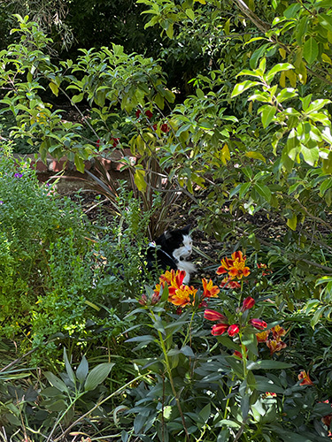

After reading “Best Practices for Modals/ Overlays/ Dialog Windows” I enjoyed how they were up front about the frustration caused by modals. The most common problem I have with modals is when they are unprompted. It makes me so angry to the point where the rest of my experience on the site is ruined. I also dislike when modals don't offer affordances to click out or escape. One time I encountered a modal so poorly designed it took me at least a minute to figure out where the tiny x out button was. The contrast on the button was so poor it blended into the background and the site did not allow clicking outside the modal to escape.
I realize now there is a way modals should be designed. I wonder what causes people to design these terrible modals, because surely they know it is creating a horrible experience for users. While reading I also began to think about accessibility issues created by modals. It should be a requirement for these sites to be accessible because if an everyday user can’t navigate it, I wonder what it looks like for someone else. Take my personal experience with a horribly designed modal, it took me a minute to figure out how to deal with it. This reading makes me want to do more readings about accessibility in design and solutions created.
Form Research
Forms are annoying to deal with as a user and as a designer. They are tedious but often required in daily tasks like booking a flight, ordering online, and signing up for absolutely anything. It’s important to be empathetic when designing these input fields and always put yourself in the user's shoes to understand difficulties.
After reading "Best practices for form design" I learned a lot of annoyances in form design that actually can be avoided. One instance that stood out to me was the example text or hint labelling that appears in input fields. Sometimes the hints appear in the input but once you start typing the text disappears, a user then gets sidetracked and forgets what they were supposed to do. I know this has personally happened to me because I have the attention span of a toddler. Although this can be easily avoided by just putting the hint below the input.
I feel like user friendly design can be accomplished by referencing good design cases, and examining why it's good. An example I thought of was Citation Machine, specifically how they remind users to check the information and fill out empty fields. The site highlights the required input boxes to be filled and the sections are formatted to give the input fields breathing room. The action button is also distinguishable on the page and has a clear direction.
After reading the article and looking at design forms like Citation Machine, I have a new perspective on form design. I see how detailed instruction must be, and how easing cognitive load for users throughout the process is essential for completion. I will try my best to implement these practices going forward in my design to create a somewhat painless experience for users.
Visual Thinking Strategies Research
After reading the article and how people have thought about, and created stories for the images was interesting. It made me start to see photos truly as an art form. I have previously taken art history classes where everything had meaning, from symbols, color, animals, and brush strokes. Reading the article made me put on my art history glasses to examine the stories told in the photos. It’s also cool to see how people create their own interpretations and the evidence found to back up their ideas.
Looking at this website I found a unique blend of user interactions and image manipulations that made the site really fun to play with. The design is very simple but the micro interactions and hints that point to interactions is well done. I like the beginning where clicking on the image reveals more text about each service they specialize in. Clicking on and off each creates a cascading effect hinting that more information is waiting to be explored down the page. Towards the middle of the site a row of images is displayed and hovering over an image creates a focus state. Hovering over an image shrinks it while making the rest of the site black and white while the image remains as the only color.
After reading and analyzing images I have found that there is more to be explored. I feel very inspired to start my project and implement interactions that highlight my story.
Visual Thinking Analysis
Since I was not in class on Tuesday I will be analyzing my own images looking at one of them through a different lens. The image of the tree has so many cracks and fibers to get lost in. The dark shadows in between the bark are mysterious, making me wonder what else lives there. The subject of trees is also full of history. Since these huge monuments can have years of wisdom, I wonder how old the tree is. This tree must be older than me and what has this tree seen or lived through. This image would tell more of the story taking a step back to reveal more or taking a closer look. Maybe revisiting the tree will offer new angles up in the branches or in the cracks of the bark. I also wonder how this image would be in black and white would it be distinguishable?
Mia Trujillo, 2026
The image of the cat is very whimsical, almost like a scene from Alice in Wonderland. I was taking my daily walk around Davis and one of my favorite places to pass through is College Park. I love the character of the homes and their gardens. There are also huge trees that shade the street making this portion of my walk especially relaxing escaping the sun. While I was walking through I was admiring the beautiful flowers that were blooming and in the bushes I noticed someone else enjoying them too. I had to take a picture of this cat because it was so calm like a statue. I also just love big and fluffy cats too and I had to show my friends. This image shows a peek into my daily life and the hidden gems found in Davis. I think I could expand on this story more by adding to the whimsy. Maybe experimenting with filters and effects could make this image interractive.

Mia Trujillo, 2026
Game Design Research
After reading the article I realize that designing a game that withstands the test of time and enjoyed by a worldwide audience requires simplicity and constant testing. Some principles that stuck out to me were the ideas of replayability, the challenge skill balance, and community. Looking specifically at wordle the game occurs everyday making it instantly replayable, although for those of us that still can't get the wordle on the first try it becomes a day long activity. Thinking of new words to try and new leads that maximize your efforts is a brainteaser. This cycle continues for users everyday because it is such an enriching experience. Along with the experience comes frustration and joy. The game is simple for people to follow along with and the words are fair for every audience. If wordle became 10 letters along it would not have gained the success it has seen, because adding more letters limits the audience creating a much more challenging experience. Since the game has become such a hit everyone is playing. It has become a topic in pop culture to discuss with all ages creating a community discussion. I started playing wordle in high school and my friends and I would challenge each other to finish it first. I never finished first sadly but thankfully I was able to ask my friends for clues that lead me to the answer. It became one of my favorite parts of the day, the friendly competition was exciting. We were even able to hook our English teacher onto it and it became a class conversation everyday.